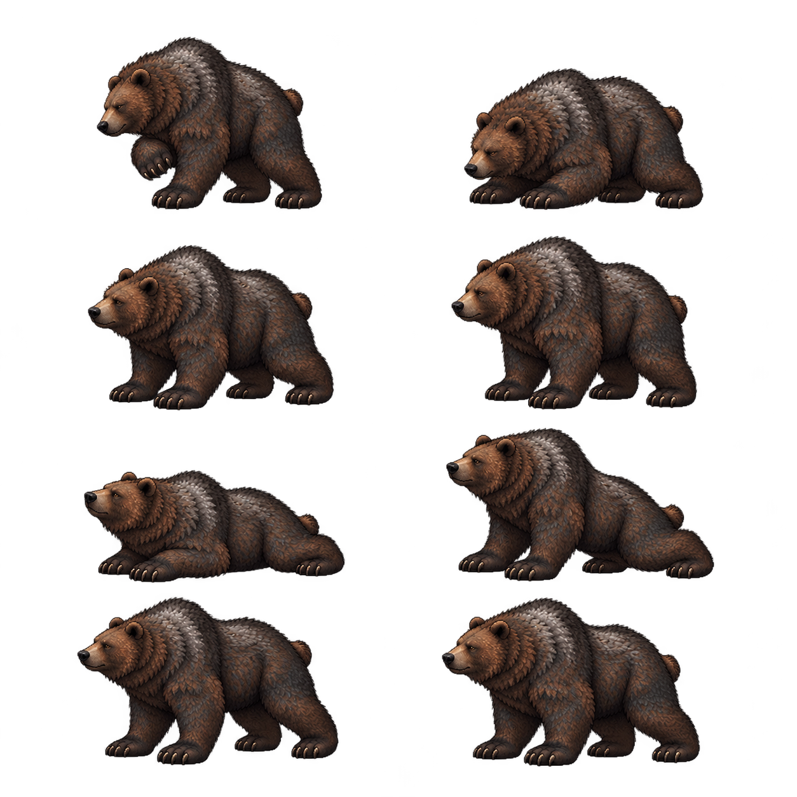

정확 image_gen1회/1PNG/8고유 원문, 추가 생성0회입니다. v346의72제안과 보류8원문은 불변입니다. 새source의 전체bbox 폭은 셀56.6~67.3%로 요청60%를 일부 초과했습니다. 부모 원문검토 후 실제 완전한 분리·무손실crop·이웃0을 우선하며 미충족 비율을 기록합니다.
원문 해상도에 맞춰 clip 공통배율을 hurt.115/rise.12로 제안합니다. 각 pose를 따로 늘이거나 줄이지 않습니다. 새RISE 마지막은 v346보다 표시폭약13.3%크고 높이약5.9%(2월드px)낮습니다. 그림의 종횡비 차이를 비균등stretch로 숨기지 않고 실제Native수락은 부모가 진행합니다.
